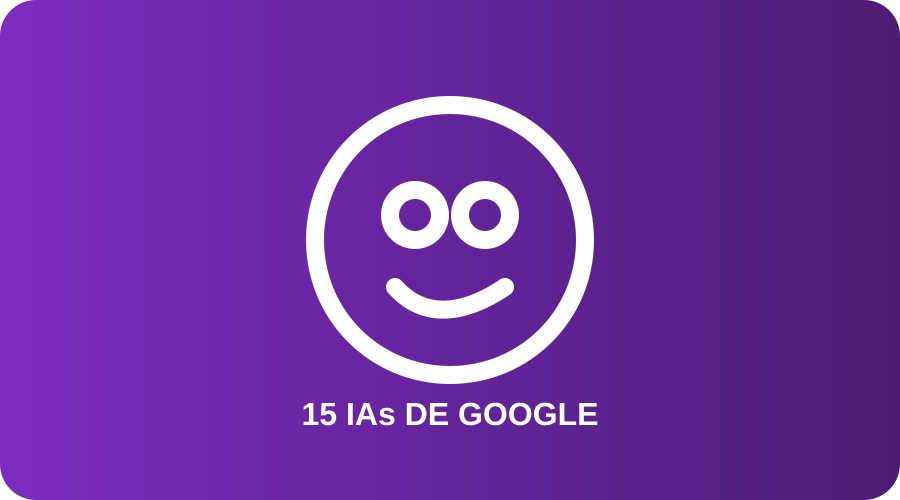

06 · Investigación adicional
15 IAs y productos de Google
Esta selección reúne productos y experiencias de inteligencia artificial de Google que sirven para conversar, estudiar, investigar, programar, crear imágenes, video, música y prototipos.

1. Gemini
Asistente de IA para conversar, aprender, escribir, analizar información y realizar tareas.
Cómo se usa: se escribe una instrucción clara y se revisa la respuesta.
2. NotebookLM
Ayuda a investigar y estudiar a partir de fuentes que el usuario proporciona.
Cómo se usa: se agregan fuentes y se hacen preguntas sobre ellas.
3. Google AI Studio
Entorno para probar modelos de Gemini y construir prototipos con IA.
Cómo se usa: se experimenta con prompts y configuraciones de modelos.
4. Google Flow
Estudio creativo para generar y editar imágenes y videos con modelos de Google.
Cómo se usa: se describen escenas y se iteran resultados visuales.
5. Google Flow Music
Herramienta creativa para trabajar con generación y edición de música mediante IA.
Cómo se usa: se parte de una idea y se describen estilo, estructura o cambios.
6. Whisk
Herramienta experimental de Google Labs para explorar creación visual con IA.
Cómo se usa: se combinan ideas o referencias para generar conceptos visuales.
7. Stitch
Herramienta de diseño que ayuda a convertir instrucciones e ideas en interfaces.
Cómo se usa: se describe una interfaz y se itera sobre el diseño generado.
8. Jules
Agente de programación de Google que puede trabajar sobre tareas de código.
Cómo se usa: se asigna una tarea de desarrollo y se revisan los cambios propuestos.
9. Opal
Herramienta de Google Labs orientada a crear pequeños flujos o experiencias con IA.
Cómo se usa: se parte de una idea y se construye un flujo de trabajo con instrucciones.
10. Pomelli
Herramienta de IA para ayudar con contenido y diseño de marca.
Cómo se usa: se proporciona una identidad o idea de marca para generar propuestas.
11. Project Genie
Experiencia experimental para crear y explorar mundos interactivos mediante IA.
Cómo se usa: se describe una idea de mundo y se exploran sus posibilidades.
12. Gemini Notebook
Experiencia de cuadernos de estudio e investigación integrada con Gemini.
Cómo se usa: se reúnen materiales y se usan herramientas de estudio para comprenderlos.
13. IA en Google Search
Funciones de IA dentro del buscador para resumir, organizar y explorar información.
Cómo se usa: se realiza una búsqueda normal y se interactúa con las funciones disponibles.
14. Google Antigravity
Plataforma orientada a desarrollo con agentes de IA que ayudan a construir y ejecutar tareas.
Cómo se usa: se plantea una tarea de desarrollo y el agente ayuda a ejecutarla.
15. Gemini Code Assist
Asistente de programación de Google que ayuda a escribir, explicar y revisar código.
Cómo se usa: se trabaja en un entorno compatible y se solicitan sugerencias o explicaciones.
¿Por qué incluirlas en PEPO?
La relación con el proyecto es directa: Gemini puede apoyar la investigación, NotebookLM organizar fuentes, las herramientas creativas producir conceptos visuales o musicales y las herramientas de programación ayudar a prototipar. Para un trabajo escolar, lo importante es explicar qué hace cada una y respetar sus condiciones de acceso.